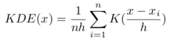
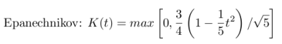
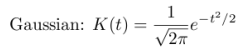
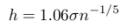
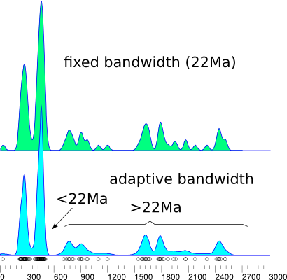

Density Plots
Given a set of n measurements xi (i=1,...,n), the Kernel Density Estimator (KDE) can
be written as follows:

where K(·) is the 'kernel' and h is the 'bandwidth'. Some popular choices for the kernel
are [Silverman, 1986]:

and

More important than the choice of kernel is the bandwidth. Picking the wrong bandwidth may lead to
over- or undersmoothed density estimates. The bandwidth can either be constant
('kernel density estimation'), or vary according to the local density
('adaptive kernel density estimation'). If the distribution is
unimodal and smooth, the optimal bandwidth may be calculated analytically [Silverman, 1986]:

where σ is the standard deviation of the data set. Most detrital age distributions,
however, are not smooth or unimodal, and the above equation is therefore rarely appropriate,
yielding oversmoothed density estimates. Adaptive kernel density estimates vary
the bandwidth according to the local density. In areas where data density
is sparse, a large bandwidth is used, and the distribution is smoothed.
Where lots of data are available, a narrower bandwidth is used allowing the
KDE to provide a high resolution estimate in those parts of the distribution.
A large number of methods are available for the selection of the adaptive bandwidth.

This program implements a fixed kernel algorithm based on the diffusion equation, which was
shown to be both fast and accurate [Botev et al., 2010]. Adaptive kernel density estimation
is achieved by taking the Botev estimator as a starting point, and then modifying it according
to the sample point estimator of Abramson [1982]. The adaptive kernel density is the default output.
The original Botev estimator can be retrieved by clicking Options → Settings
and deselecting the adaptive checkbox.